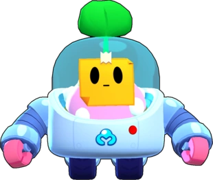

¿Quién es Sprout
A primera vista, Sprout parece un robot de jardinería adorable que ayuda a Rosa en el biodomo, ¡pero su función principal es incubar una semilla rosa de lo más extraña!
Sprout es un brawler Mítico con una salud moderadamente baja y una producción de daño moderada, pero una inmensa utilidad con su súper. Ataca lanzando una bomba de semillas sobre los obstáculos que rebotan en el suelo y las paredes. La bomba de semillas explota cuando entra en contacto con los enemigos o después de un tiempo determinado, también inflige daño en área. Con su súper, Sprout lanza una super Semilla, creando una barrera temporal similar a una pared cuando aterriza.
|  |
NIVEL DE FUERZA 11 |
Sus gadgets
ABONO VEGETAL: Sprout se traga un arbusto y recupera 1800 puntos de salud. |
TRANPLANTE: Sprout destruye su barrera actual, pero su súper se cargará de nuevo por completo instantáneamente. |
Sus habilidades estelares
 |
SOBRECRECIMIENTO: Cada 5 segundos, la siguiente bomba de semillas explotará en un radio mayor. |
 |
FOTOSÍNTESIS: Sprout activa un escudo, protegiéndose parcialmente de los ataques mientras está entre los arbusto. |
Su hipercarga
ESPINAS: La barrera vegetal de Sprout inflige daño a los enemigos cercanos. |
 Braian Arancibia
Braian Arancibia Aya El Baarar
Aya El Baarar